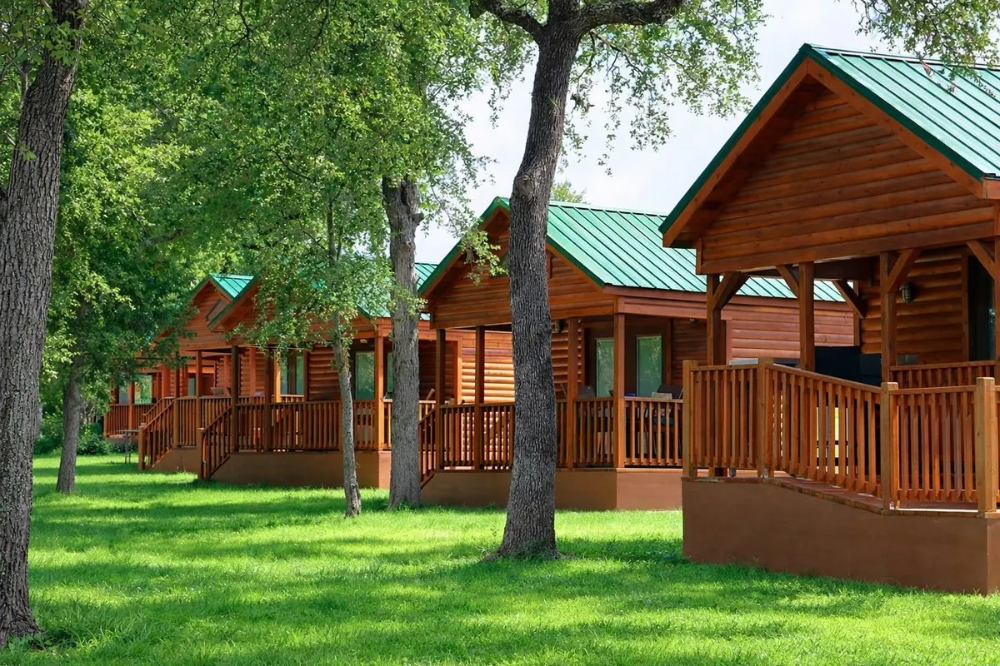
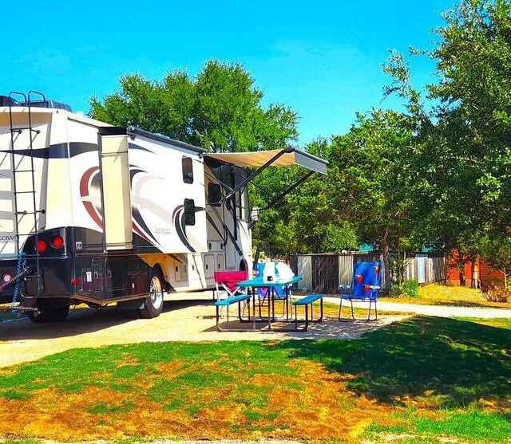
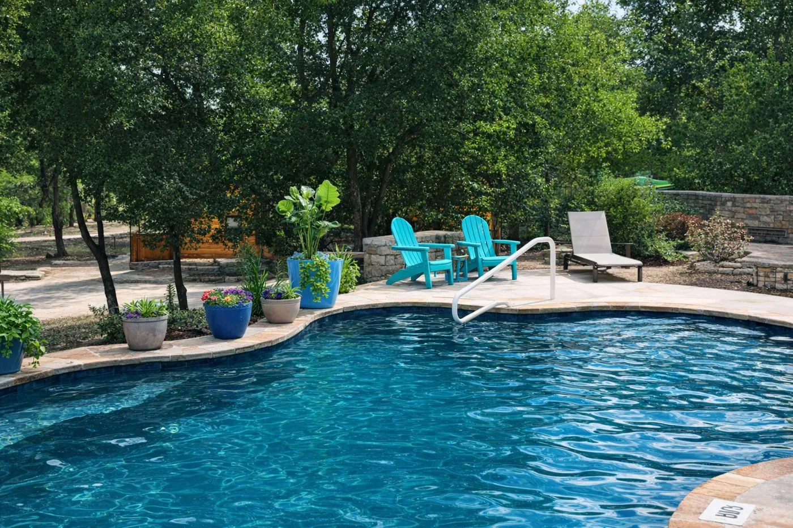

Your Basecamp for Kronkosky State Natural Area
Al's Hideaway is the closest campground to the new Kronkosky State Natural Area, opening fall 2026. Hike all day, then come home to a real bed, a full kitchen, and 20 acres of your own.
Check Availability & BookSkip the Hotel. Keep the Adventure Going.
A hotel room off the highway is a place to sleep between trail days. Al's Hideaway is where the trip actually happens — before and after the hike.
The nearby hotel room
- Drive 20–40 minutes back into town for dinner
- No kitchen, no cooler, no gear space
- Parking lot views, highway noise
- Built for a night, not a basecamp
Al's Hideaway
- 6 minutes from the trail — back before you're even hungry
- MeMaw's Country Store: firewood, snacks, sno cones, smoothies, cooked food & souvenirs
- 20 acres, 2 creeks, a pool, and room to actually unwind
- One of the darkest sky corridors in Central Texas — real quiet, real stars
- 13 cabins, 10 full-hookup RV sites & 9 cowboy campsites — pick your basecamp
Everything You Need, Already Here
No packing a cooler, no scouting for a grocery store after a long day on the trail.

13 Handcrafted Log Cabins
Pet-friendly cabins with real beds, A/C, and no cleaning fees.

RV Sites & Cowboy Campsites
10 full-hookup RV sites and 9 cowboy campsites for tents.

Pool
Cool off and recover after a day of hiking Hill Country trails.
MeMaw's Country Store
Firewood, snacks, sno cones, smoothies, cooked food & souvenirs — on-site.
Outdoor Kitchen & Pavilion
Cook your own post-hike meal or spread out under the pavilion.
20 Acres & 2 Creeks
Room to spread out, wildlife to watch, creek access to cool off.
Dark Skies, No City Noise
Pipe Creek sits in one of the darkest sky corridors in Central Texas — see the Milky Way with the naked eye.
About Kronkosky State Natural Area
The Albert & Bessie Kronkosky State Natural Area is 3,852 acres of protected Hill Country under construction on Highway 46 in Pipe Creek, aiming for a fall 2026 opening — hiking and backpacking trails, 25 campsites plus cabins, limited mountain biking, and an environmental classroom. Al's Hideaway will be the closest campground to it, period. Read the full story on our blog →
Best Time to Hike the Hill Country
Cool-weather season runs fall through spring — plan your trip accordingly.